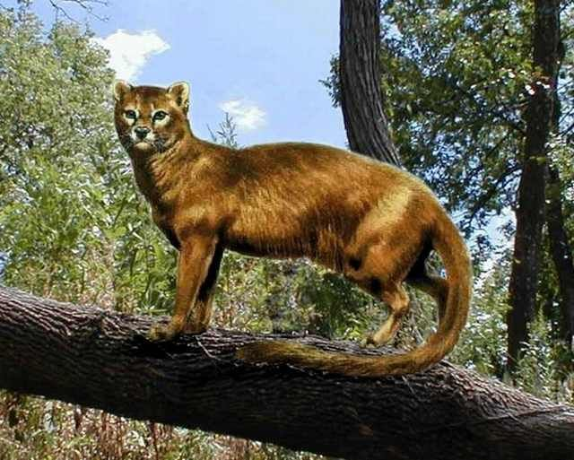
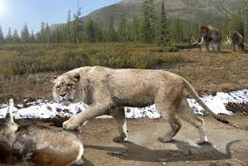

No antigo Egipto, os leões já eram representados em monumentos antigos, tendo como exemplo a esfinge,
monumento egípcio que possuía um corpo de leão e a cabeça de um homem e estes usavam a mesma palavra para descrever leão e gato.
No antigo Egipto, os leões já eram representados em monumentos antigos, tendo como exemplo a esfinge,
monumento egípcio que possuía um corpo de leão e a cabeça de um homem e estes usavam a mesma palavra para descrever leão e gato.

Há cerca de 40 milhões de anos, o género Miacis, o mais antigo antepassado dos felídeos e dos canídeos,
habitava o continente norte-americano e a Europa, sendo as fases intermediárias entre este género e o leão atual pouco conhecidas.
No entanto, o género Nimvarus, que existiu à 30 milhões de anos, já possuía a dentadura presente nos felídeos, observando-se caninos
longos e cortantes, tornando-se, ao longo da história da família Felidae, maiores e mais afiados, ultrapassando o bordo superior da
mandíbula.
Assim pode-se afirmar que o género Smilodon, género a que pertencia o tigre-dentes-de-sabre, foi o representante desses
felídeos.
 Na América foram encontrados exemplares de Panthera atrox, conhecido como leão-americano e na península Ibérica de Panthera spelaea, conhecido como leão-das-cavernas, sendo estes considerados antepassados diretos do leão atual. O leão-das-cavernas foi desenhado em pinturas rupestres nas grutas de Combarelles, na Dordonha, que apontam para o Paleolítico Superior. Esta espécie acabou por desaparecer com a extinção das florestas.
No antigo Egipto, os leões já eram representados em monumentos antigos, tendo como exemplo a esfinge,
monumento egípcio que possuía um corpo de leão e a cabeça de um homem e estes usavam a mesma palavra para descrever leão e gato.
 No que toca à presença dos leões na europa, estes eram reunidos nas arenas da Roma antiga e usados em espetáculos.
No entanto especula-se que a extinção destes animais na Europa terá ocorrido no último milénio visto que Aristóteles afirmava que o
leão não existia em nenhuma outra região da Europa.
No que toca à presença dos leões na europa, estes eram reunidos nas arenas da Roma antiga e usados em espetáculos.
No entanto especula-se que a extinção destes animais na Europa terá ocorrido no último milénio visto que Aristóteles afirmava que o
leão não existia em nenhuma outra região da Europa.